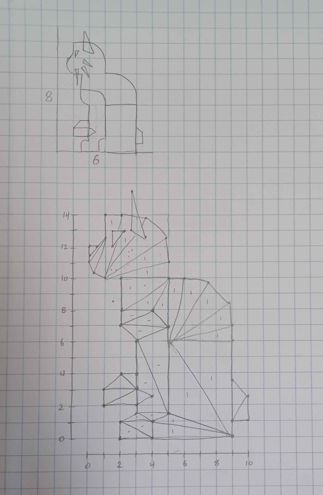
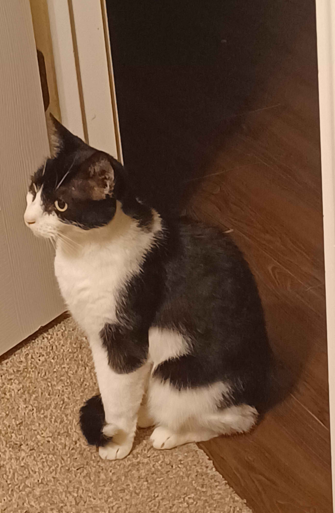

|
Shape |
Color |
Awesome points: Check out "Jelly" in the brush dropdown! Bigger brush sizes work better.
I went through the guide videos after trying the assignment on my own, so my solutions for drawing triangles and circles differ from the ones shown.
Here are my paper sketches for the drawing, with the pose based on a picture of my cat:
 